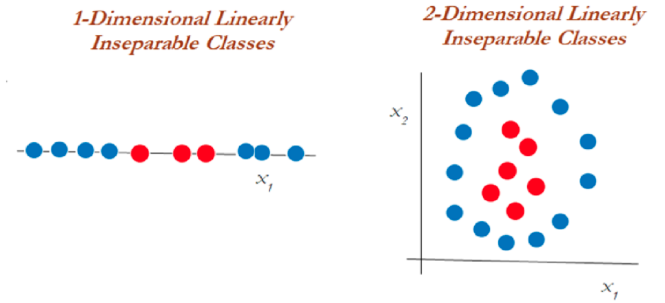
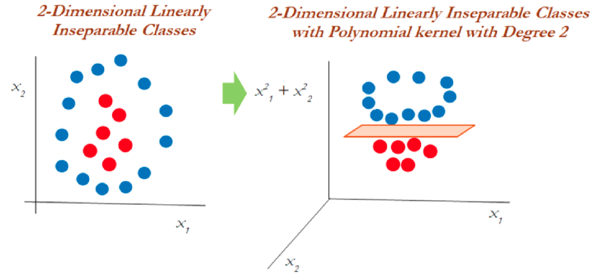
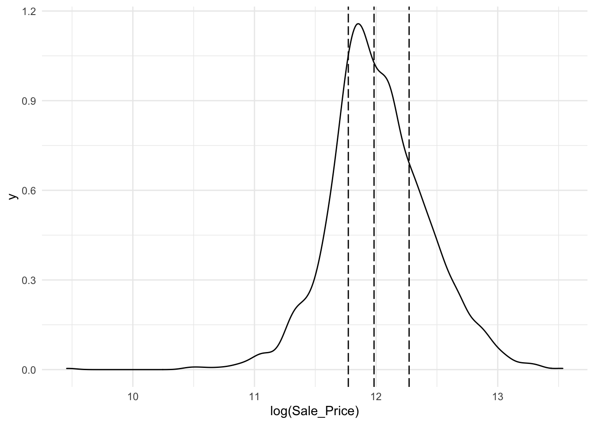
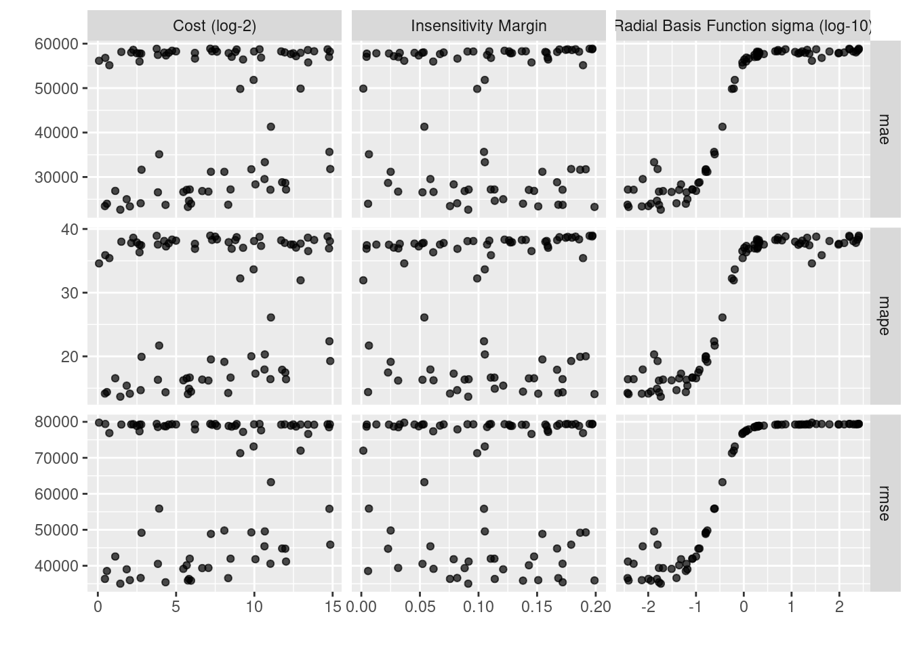

Capítulo 4 Support Vector Machine (SVM / SVR)
Es común encontrar en la literatura el nombre de SVM para referirse tanto al caso de regresión como al de clasificación, no obstante, SVR se refiere particularmente a Suport Vector Regression.
Support vector machine, llamado SVM, es un algoritmo de aprendizaje supervisado que se puede utilizar para problemas de clasificación y regresión. Se utiliza para conjuntos de datos más pequeños, ya que tarda demasiado en procesarse.
El principal objetivo de esta técnica es encontrar el Hiperplano de Separación Óptima, también conocido como Boundary Decision, el cual será el margen de clasificación más grande que podamos ajustar para separar a las clases involucradas, limitando las veces que una observación viola dicho margen.

Para entender este algoritmo es necesario entender 3 conceptos principales:
Maximum margin classifiers
Support vector classifiers
Support vector machines
Estudiemos cada uno de estos principios.
4.1 Maximum Margin Classifier
A menudo se generalizan con máquinas de vectores de soporte, pero SVM tiene muchos más parámetros en comparación. El clasificador de margen máximo considera un hiperplano con ancho de separación máxima para clasificar los datos. Sin embargo, se pueden dibujar infinitos hiperplanos en un conjunto de datos por lo que es importante elegir el hiperplano ideal para la clasificación.
En un espacio n-dimensional, un hiperplano es un subespacio de la dimensión n-1. Es decir, si los datos tienen un espacio bidimensional, entonces el hiperplano puede ser una línea recta que divide el espacio de datos en dos mitades y pasa por la siguiente ecuacion:
\[\beta_0 + \beta_1X_1 + \beta_2X_2=0\]
Las observaciones que caen en el hiperplano sigue la ecuación anterior. Las observaciones que caen en la región por encima o por debajo del hiperplano sigue las siguientes ecuaciones:
\[\beta_0 + \beta_1X_1 + \beta_2X_2>0\]
\[\beta_0 + \beta_1X_1 + \beta_2X_2<0\]
El clasificador de margen máximo a menudo falla en la situación de casos no separables en los que no puede asignar un hiperplano diferente para clasificar datos no separables. Para tales casos, un clasificador de vectores de soporte viene al rescate.

Del diagrama anterior, podemos suponer infinitos hiperplanos (izquierda). El clasificador de margen máximo viene con un solo hiperplano que divide los datos como en la gráfica de la derecha. Los datos que tocan los hiperplanos positivo y negativo se denominan vectores de soporte.
4.2 Support Vector Classifiers
Los vectores de soporte son las observaciones que están más cerca del hiperplano e influyen en la posición y orientación del hiperplano. Este tipo de clasificador puede considerarse como una versión extendida del clasificador de margen máximo. Cuando tratamos con datos de la vida real, encontramos que la mayoría de las observaciones están en clases superpuestas. Es por eso que se implementan clasificadores de vectores de soporte.
Usando estos vectores de soporte, maximizamos el margen del clasificador. Eliminar los vectores de soporte cambiará la posición del hiperplano. Estos son los puntos que nos ayudan a construir nuestro SVM. Consideremos un parámetro de ajuste C. Entendamos con el siguiente diagrama.

Podemos ver en el gráfico de la izquierda que los valores más altos de C generaron más errores que se consideran una violación o infracción. El diagrama de la derecha muestra un valor más bajo de C y no brinda suficientes posibilidades de infracción al reducir el ancho del margen.
Puede considerarse al parámetro C como el monto de regularización, tal que:
Si C es bajo, el margen será más amplio y tendremos un mayor número de violaciones al margen, pero el modelo generalizará mejor
Si C es alto, nuestro margen será menos amplio y tendrá menos violaciones. Sin embargo, no generalizará bien.
Este modelo es sensible a cambios en la escala de datos de entrada, por lo que será importante estandarizar las variables antes de usar este modelo.
4.3 Support Vector Machine
El enfoque de la máquina de vectores de soporte se considera durante una decisión no lineal y los datos no son separables por un clasificador de vectores de soporte, independientemente de la función de costo.
Cuando es casi imposible separar clases de manera no lineal, aplicamos el truco llamado truco del kernel el cual ayuda a manejar la separación de los datos.

En el gráfico anterior, los datos que eran inseparables en una dimensión se separaron una vez que se transformaron a un espacio de dos dimensiones después de aplicar una transformación mediante kernel polinomial de segundo grado. Ahora veamos cómo manejar los datos bidimensionales linealmente inseparables.

En datos bidimensionales, el núcleo polinomial de segundo grado se aplica utilizando un plano lineal después de transformarlo a dimensiones superiores.
4.4 El truco del Kernel
Las funciones Kernel son métodos con los que se utilizan clasificadores lineales como SVM para clasificar puntos de datos separables no linealmente. Esto se hace representando los puntos de datos en un espacio de mayor dimensión que su original. Por ejemplo, los datos 1D se pueden representar como datos 2D en el espacio, los datos 2D se pueden representar como datos 3D, etcétera.
El truco del kernel ofrece una forma de calcular las relaciones entre los puntos de datos utilizando funciones del kernel y representar los datos de una manera más eficiente con menos cómputo. Los modelos que utilizan esta técnica se denominan “modelos kernelizados”.

Hay varias funciones que utiliza SVM para realizar esta tarea. Algunos de los más comunes son:
- El núcleo lineal: Se utiliza para datos lineales. Esto simplemente representa los puntos de datos usando una relación lineal.
\[K(x, y)=(x^T \cdot y)\] \[f(x)=w^T \cdot x + b\] Esta formulación se presenta como solución al problema de optimización sobre w:
\[min_{w\in R^d} \frac{1}{2}\parallel w \parallel ^2+ C\sum_{i}^{N}{max(0, 1-y_i f(x_i))}\] \[s.a. \quad y_i f(x_i) \geq 1 - max(0, 1-y_i f(x_i))\] En donde \(1-y_i f(x_i)\) es la distancia de \(x_i\) al correspondiente margen de la clase si \(x_i\) se encuentra en el lado equivocado del margen y cero en caso contrario. De esta forma, los puntos que se encuentran lejos del margen del lado equivocado obtendrán una mayor penalización. Dar click en la siguiente liga para mayor entendimiento del problema de optimización.
- Función de núcleo polinomial: Transforma los puntos de datos mediante el uso del producto escalar y la transformación de los datos en una “dimensión n,” n podría ser cualquier valor de 2, 3, etcétera, es decir, la transformación será un producto al cuadrado o superior. Por lo tanto, representar datos en un espacio de mayor dimensión utilizando los nuevos puntos transformados.
\[K(x, y)=(c+ x^T \cdot y)^p\]
Cuando se emplea \(p=1\) y \(c=0\), el resultado es el mismo que el de un kernel lineal. Si \(p>1\), se generan límites de decisión no lineales, aumentando la no linealidad a medida que aumenta p. No suele ser recomendable emplear valores de p mayores 5 por problemas de overfitting.

- La función de base radial (RBF): Esta función se comporta como un “modelo de vecino más cercano ponderado.” Transforma los datos representándolos en dimensiones infinitas,
La función Radial puede ser de Gauss o de Laplace. Esto depende de un hiperparámetro conocido como gamma \(\gamma\). Cuanto menor sea el valor del hiperparámetro, menor será el sesgo y mayor la varianza. Mientras que un valor más alto de hiperparámetro da un sesgo más alto y menor varianza. Este es el núcleo más utilizado.
\[K(x, y)=exp(-\gamma \parallel x - y\parallel^2)=exp(-\frac{\parallel x-y \parallel ^2}{2\sigma²})\] \[f(x)=w^T \cdot \phi(x) + b\] Se realiza un mapeo de x a \(\phi(x)\) en donde los datos son separables

Es recomendable probar el kernel RBF. Este kernel tiene dos ventajas: que solo tiene dos hiperparámetros que optimizar (\(\gamma\) y la penalización \(C\) común a todos los SVM) y que su flexibilidad puede ir desde un clasificador lineal a uno muy complejo.
- La función sigmoide: También conocida como función tangente hiperbólica (Tanh), encuentra más aplicación en redes neuronales como función de activación. Esta función mapea los valores de entrada al intervalo [-1, 1].
\[K(x, y)= tanh(\kappa x\cdot y-\delta)\]
¿Por qué se llama un “truco del kernel?”
SVM vuelve a representar los puntos de datos no lineales utilizando cualquiera de las funciones del kernel de una manera que parece que los datos se han transformado, luego encuentra el hiperplano de separación óptimo, sin embargo, en realidad, los puntos de datos siguen siendo los mismos, en realidad no se han transformado. Es por eso que se llama un ‘truco del kernel.’
4.5 Support Vector Regression
El problema de la regresión es encontrar una función que aproxime la relación de un dominio de datos de entrada a números reales con base en una muestra de entrenamiento. Veamos cómo funciona SVR en realidad.

Consideremos las dos líneas rojas como el límite de decisión y la línea verde como el hiperplano. Nuestro objetivo, cuando avanzamos con SVR, es básicamente considerar los puntos que están dentro de la línea límite de decisión. Nuestra línea de mejor ajuste es el hiperplano que tiene un número máximo de puntos.
Lo primero que entenderemos será el límite de decisión. Consideremos estas líneas como si estuvieran a cualquier distancia, digamos ‘a,’ del hiperplano. Entonces, estas son las líneas que dibujamos a la distancia ‘+a’ y ‘-a’ del hiperplano. Esta ‘a’ en el texto se conoce básicamente como épsilon y representa el margen.
Suponiendo que la ecuación del hiperplano es la siguiente:
\[Y_i = W^TX + b\] Entonces estas ecuaciones se transforman en la siguiente forma:
\(W^TX + b = +a\)
\(W^TX + b = -a\)
Por lo tanto, cualquier hiperplano que satisfaga nuestra SVR debería satisfacer: \(-a < Y- WX+b < +a\)
Nuestro objetivo principal aquí es decidir un límite de decisión a una distancia ‘a’ del hiperplano original, de modo que los puntos de datos más cercanos al hiperplano o los vectores de soporte estén dentro de esa línea límite.
Vamos a tomar solo aquellos puntos que están dentro del límite de decisión y tienen la menor tasa de error, o están dentro del margen de tolerancia. Esto nos da un mejor modelo de ajuste.
4.6 Ventajas y desventajas
Ventajas
Es un modelo que ajusta bien con pocos datos
Son flexibles en datos no estructurados, estructurados y semiestructurados.
La función Kernel alivia las complejidades en casi cualquier tipo de datos.
Se observa menos sobreajuste en comparación con otros modelos.
Desventajas
El tiempo de entrenamiento es mayor cuando se calculan grandes conjuntos de datos.
Los hiperparámetros suelen ser un desafío al interpretar su impacto.
La interpretación general es difícil (black box).
4.7 Ajuste del modelo con R
Usaremos las recetas antes implementadas para ajustar tanto el modelo de regresión como el de clasificación. Exploraremos un conjunto de hiperparámetros para elegir el mejor modelo.
Recordemos los pasos a seguir al ajustar un modelo
- Separación inicial de datos ( test, train
) - Pre-procesamiento e ingeniería de variables
- Selección de tipo de modelo con hiperparámetros iniciales
- Inicialización de workflow o pipeline
- Creación de grid search
- Entrenamiento de modelos con hiperparámetros definidos (salvar los modelos entrenados)
- Análisis de métricas de error e hiperparámetros (Vuelve al paso 3 si es necesario)
- Selección de modelo a usar
- Ajuste de modelo final con todos los datos
- Validar poder predictivo con datos de prueba.
A continuación, revisaremos paso por paso este procedimiento usando SVM como modelo:
Paso 1:
library(tidymodels)
data(ames)
set.seed(4595)
ames_split <- initial_split(ames, prop = 0.75)
ames_train <- training(ames_split)
ames_test <- testing(ames_split)
ames_folds <- vfold_cv(ames_train)Contando con datos de entrenamiento, procedemos a realizar el feature engineering para extraer las mejores características que permitirán realizar las estimaciones en el modelo.
Paso 2:
receta_casas <- recipe(Sale_Price ~ . , data = ames_train) %>%
step_unknown(Alley) %>%
step_rename(Year_Remod = Year_Remod_Add) %>%
step_rename(ThirdSsn_Porch = Three_season_porch) %>%
step_ratio(Bedroom_AbvGr, denom = denom_vars(Gr_Liv_Area)) %>%
step_mutate(
Age_House = Year_Sold - Year_Remod,
TotalSF = Gr_Liv_Area + Total_Bsmt_SF,
AvgRoomSF = Gr_Liv_Area / TotRms_AbvGrd,
Pool = if_else(Pool_Area > 0, 1, 0),
Exter_Cond = forcats::fct_collapse(Exter_Cond, Good = c("Typical", "Good", "Excellent"))) %>%
step_relevel(Exter_Cond, ref_level = "Good") %>%
step_normalize(all_predictors(), -all_nominal()) %>%
step_dummy(all_nominal()) %>%
step_interact(~ Second_Flr_SF:First_Flr_SF) %>%
step_interact(~ matches("Bsmt_Cond"):TotRms_AbvGrd) %>%
step_rm(
First_Flr_SF, Second_Flr_SF, Year_Remod,
Bsmt_Full_Bath, Bsmt_Half_Bath,
Kitchen_AbvGr, BsmtFin_Type_1_Unf,
Total_Bsmt_SF, Kitchen_AbvGr, Pool_Area,
Gr_Liv_Area, Sale_Type_Oth, Sale_Type_VWD
) %>%
prep()
receta_casas## Recipe
##
## Inputs:
##
## role #variables
## outcome 1
## predictor 73
##
## Training data contained 2197 data points and no missing data.
##
## Operations:
##
## Unknown factor level assignment for Alley [trained]
## Variable renaming for Year_Remod [trained]
## Variable renaming for ThirdSsn_Porch [trained]
## Ratios from Bedroom_AbvGr, Gr_Liv_Area [trained]
## Variable mutation for ~Year_Sold - Year_Remod, ~Gr_Liv_Area + To... [trained]
## Re-order factor level to ref_level for Exter_Cond [trained]
## Centering and scaling for Lot_Frontage, Lot_Area, Year_Built, Year_Remod,... [trained]
## Dummy variables from MS_SubClass, MS_Zoning, Street, Alley, Lot_Shape, Land_Co... [trained]
## Interactions with Second_Flr_SF:First_Flr_SF [trained]
## Interactions with (Bsmt_Cond_Fair + Bsmt_Cond_Good + Bsmt_Cond_No_Ba... [trained]
## Variables removed First_Flr_SF, Second_Flr_SF, Year_Remod, Bsmt_Full_Bath... [trained]Recordemos que la función recipe() solo son los pasos a seguir, necesitamos usar la función prep() que nos devuelve una receta actualizada con las estimaciones y la función juice() que nos devuelve la matriz de diseño.
Una vez que la receta de transformación de datos está lista, procedemos a implementar el pipeline del modelo de interés. Existen diversas funciones dentro de tidymodels para implementar estos modelos, entra las cuales se encuentran:
- Base lineal: svm_lineal()
- Base polinomial: svm_poly()
- Base radial: svm_rbf()
Paso 3:
svm_model <- svm_rbf(
mode = "regression",
cost = tune(),
rbf_sigma = tune(),
margin = tune()) %>%
set_engine("kernlab")
svm_model## Radial Basis Function Support Vector Machine Specification (regression)
##
## Main Arguments:
## cost = tune()
## rbf_sigma = tune()
## margin = tune()
##
## Computational engine: kernlabPaso 4:
svm_workflow <- workflow() %>%
add_recipe(receta_casas) %>%
add_model(svm_model)
svm_workflow## ══ Workflow ════════════════════════════════════════════════════════════════════
## Preprocessor: Recipe
## Model: svm_rbf()
##
## ── Preprocessor ────────────────────────────────────────────────────────────────
## 11 Recipe Steps
##
## • step_unknown()
## • step_rename()
## • step_rename()
## • step_ratio()
## • step_mutate()
## • step_relevel()
## • step_normalize()
## • step_dummy()
## • step_interact()
## • step_interact()
## • ...
## • and 1 more step.
##
## ── Model ───────────────────────────────────────────────────────────────────────
## Radial Basis Function Support Vector Machine Specification (regression)
##
## Main Arguments:
## cost = tune()
## rbf_sigma = tune()
## margin = tune()
##
## Computational engine: kernlabPaso 5:
svm_parameters_set <- svm_workflow %>%
parameters() %>%
update(
cost = cost(c(0, 0.5)),
rbf_sigma = rbf_sigma(c(-3, 3)),
margin = svm_margin(c(-2, 2))
)
set.seed(123)
svm_grid <- svm_parameters_set %>%
grid_max_entropy(size = 100)
svm_grid## # A tibble: 100 × 3
## cost rbf_sigma margin
## <dbl> <dbl> <dbl>
## 1 1.22 0.504 0.571
## 2 1.41 1.22 0.329
## 3 1.33 0.111 1.38
## 4 1.35 0.0935 -1.65
## 5 1.04 0.937 1.48
## 6 1.14 0.0154 -1.91
## 7 1.39 70.2 -1.98
## 8 1.07 1.16 -0.487
## 9 1.17 1.34 0.948
## 10 1.02 0.0303 0.230
## # … with 90 more rowsctrl_grid <- control_grid(save_pred = T, verbose = T)Paso 6:
library(doParallel)
UseCores <- detectCores() - 1
cluster <- makeCluster(UseCores)
registerDoParallel(cluster)
svm1 <- Sys.time()
svm_tune_result <- tune_grid(
svm_workflow,
resamples = ames_folds,
grid = svm_grid,
metrics = metric_set(rmse, mae, mape),
control = ctrl_grid
)
svm2 <- Sys.time(); svm2 - svm1
stopCluster(cluster)
svm_tune_result %>% saveRDS("models/svm_model_reg.rds")Podemos obtener las métricas de cada fold con el siguiente código:
svm_tune_result <- readRDS("models/svm_model_reg.rds")
unnest(svm_tune_result, .metrics)## # A tibble: 3,000 × 11
## splits id cost rbf_sigma margin .metric .estimator .estimate
## <list> <chr> <dbl> <dbl> <dbl> <chr> <chr> <dbl>
## 1 <split [1977/220]> Fold01 1.29 5.72 -1.13 rmse standard 93195.
## 2 <split [1977/220]> Fold01 1.29 5.72 -1.13 mae standard 76961.
## 3 <split [1977/220]> Fold01 1.29 5.72 -1.13 mape standard 54.4
## 4 <split [1977/220]> Fold01 1.33 0.0111 0.504 rmse standard 39947.
## 5 <split [1977/220]> Fold01 1.33 0.0111 0.504 mae standard 27681.
## 6 <split [1977/220]> Fold01 1.33 0.0111 0.504 mape standard 18.6
## 7 <split [1977/220]> Fold01 1.37 0.0116 0.759 rmse standard 41618.
## 8 <split [1977/220]> Fold01 1.37 0.0116 0.759 mae standard 29745.
## 9 <split [1977/220]> Fold01 1.37 0.0116 0.759 mape standard 20.3
## 10 <split [1977/220]> Fold01 1.10 351. 1.08 rmse standard 92508.
## # … with 2,990 more rows, and 3 more variables: .config <chr>, .notes <list>,
## # .predictions <list>Paso 7:
collect_metrics(svm_tune_result)## # A tibble: 300 × 9
## cost rbf_sigma margin .metric .estimator mean n std_err .config
## <dbl> <dbl> <dbl> <chr> <chr> <dbl> <int> <dbl> <chr>
## 1 1.29 5.72 -1.13 mae standard 69853. 10 1027. Preprocesso…
## 2 1.29 5.72 -1.13 mape standard 50.6 10 1.12 Preprocesso…
## 3 1.29 5.72 -1.13 rmse standard 85670. 10 1623. Preprocesso…
## 4 1.33 0.0111 0.504 mae standard 26235. 10 654. Preprocesso…
## 5 1.33 0.0111 0.504 mape standard 16.3 10 0.572 Preprocesso…
## 6 1.33 0.0111 0.504 rmse standard 37486. 10 1392. Preprocesso…
## 7 1.37 0.0116 0.759 mae standard 29323. 10 598. Preprocesso…
## 8 1.37 0.0116 0.759 mape standard 18.7 10 0.599 Preprocesso…
## 9 1.37 0.0116 0.759 rmse standard 40146. 10 1318. Preprocesso…
## 10 1.10 351. 1.08 mae standard 68040. 10 1067. Preprocesso…
## # … with 290 more rowsEn la siguiente gráfica observamos el error cuadrático medio de las distintas métricas:
svm_tune_result %>% autoplot()
svm_tune_result %>% show_best(n = 10, metric = "mape")## # A tibble: 10 × 9
## cost rbf_sigma margin .metric .estimator mean n std_err .config
## <dbl> <dbl> <dbl> <chr> <chr> <dbl> <int> <dbl> <chr>
## 1 1.12 0.00751 -0.166 mape standard 14.7 10 0.571 Preprocessor1…
## 2 1.27 0.0198 0.397 mape standard 15.3 10 0.565 Preprocessor1…
## 3 1.09 0.0924 -0.201 mape standard 16.2 10 0.605 Preprocessor1…
## 4 1.33 0.0111 0.504 mape standard 16.3 10 0.572 Preprocessor1…
## 5 1.33 0.00622 -0.478 mape standard 16.5 10 0.557 Preprocessor1…
## 6 1.24 0.00270 0.427 mape standard 16.8 10 0.623 Preprocessor1…
## 7 1.39 0.0438 0.487 mape standard 17.1 10 0.625 Preprocessor1…
## 8 1.07 0.142 -0.0613 mape standard 17.2 10 0.598 Preprocessor1…
## 9 1.13 0.00375 0.549 mape standard 17.4 10 0.577 Preprocessor1…
## 10 1.22 0.116 0.268 mape standard 18.0 10 0.636 Preprocessor1…Paso 8:
# Selección del mejor modelo según la métrica MAPE
svm_regression_best_model <- select_best(svm_tune_result, metric = "mape")
svm_regression_best_model## # A tibble: 1 × 4
## cost rbf_sigma margin .config
## <dbl> <dbl> <dbl> <chr>
## 1 1.12 0.00751 -0.166 Preprocessor1_Model064# Selección del modelo más regularizado a menos de una desviación estandar, según la métrica MAPE
svm_regression_best_1se_model <- select_by_one_std_err(svm_tune_result, metric = "mape", "mape")
svm_regression_best_1se_model## # A tibble: 1 × 11
## cost rbf_sigma margin .metric .estimator mean n std_err .config .best
## <dbl> <dbl> <dbl> <chr> <chr> <dbl> <int> <dbl> <chr> <dbl>
## 1 1.12 0.00751 -0.166 mape standard 14.7 10 0.571 Preproces… 14.7
## # … with 1 more variable: .bound <dbl>Paso 9:
# Modelo final
svm_regression_final_model <- svm_workflow %>%
finalize_workflow(svm_regression_best_1se_model) %>%
parsnip::fit(data = ames_train)
svm_regression_final_model## ══ Workflow [trained] ══════════════════════════════════════════════════════════
## Preprocessor: Recipe
## Model: svm_rbf()
##
## ── Preprocessor ────────────────────────────────────────────────────────────────
## 11 Recipe Steps
##
## • step_unknown()
## • step_rename()
## • step_rename()
## • step_ratio()
## • step_mutate()
## • step_relevel()
## • step_normalize()
## • step_dummy()
## • step_interact()
## • step_interact()
## • ...
## • and 1 more step.
##
## ── Model ───────────────────────────────────────────────────────────────────────
## Support Vector Machine object of class "ksvm"
##
## SV type: eps-svr (regression)
## parameter : epsilon = -0.165694889612496 cost C = 1.11558574287621
##
## Gaussian Radial Basis kernel function.
## Hyperparameter : sigma = 0.00751323450101197
##
## Number of Support Vectors : 1261
##
## Objective Function Value : -1247.61
## Training error : 0.192128Como hemos hablado anteriormente, este último objeto es el modelo final entrenado, el cual contiene toda la información del pre-procesamiento de datos, por lo que en caso de ponerse en producción el modelo, sólo se necesita de este último elemento para poder realizar nuevas predicciones. Imaginemos por un momento que pasa un mes de tiempo desde que hicimos nuestro modelo, es hora de ponerlo a prueba prediciendo valores de nuevos elementos:
Paso 10:
# Predicciones
results <- predict(svm_regression_final_model, ames_test) %>%
dplyr::bind_cols(truth = ames_test$Sale_Price) %>%
dplyr::rename(pred_svm_reg = .pred, Sale_Price = truth)
head(results)## # A tibble: 6 × 2
## pred_svm_reg Sale_Price
## <dbl> <int>
## 1 149307. 105000
## 2 179057. 185000
## 3 185456. 180400
## 4 136188. 141000
## 5 227080. 210000
## 6 198313. 216000results %>% yardstick::metrics(Sale_Price, pred_svm_reg)## # A tibble: 3 × 3
## .metric .estimator .estimate
## <chr> <chr> <dbl>
## 1 rmse standard 37629.
## 2 rsq standard 0.785
## 3 mae standard 25110.multi_metric <- metric_set(rmse, rsq, mae, mape)
multi_metric(results, truth = Sale_Price, estimate = pred_svm_reg) %>%
mutate(.estimate = round(.estimate, 2))## # A tibble: 4 × 3
## .metric .estimator .estimate
## <chr> <chr> <dbl>
## 1 rmse standard 37629.
## 2 rsq standard 0.79
## 3 mae standard 25110.
## 4 mape standard 14.6results %>%
ggplot(aes(x = pred_svm_reg, y = Sale_Price)) +
geom_point() +
geom_abline(color = "red") +
xlab("Prediction") +
ylab("Observation") +
ggtitle("Comparisson")